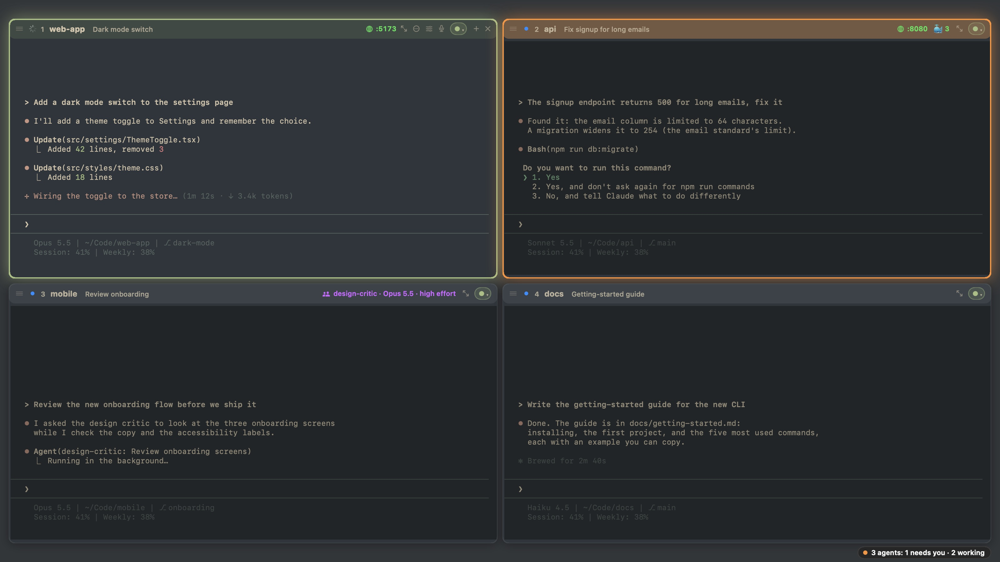
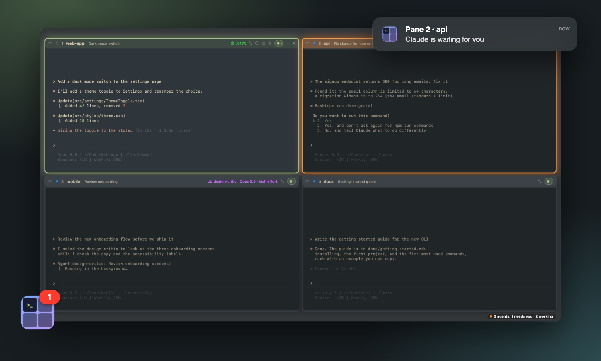
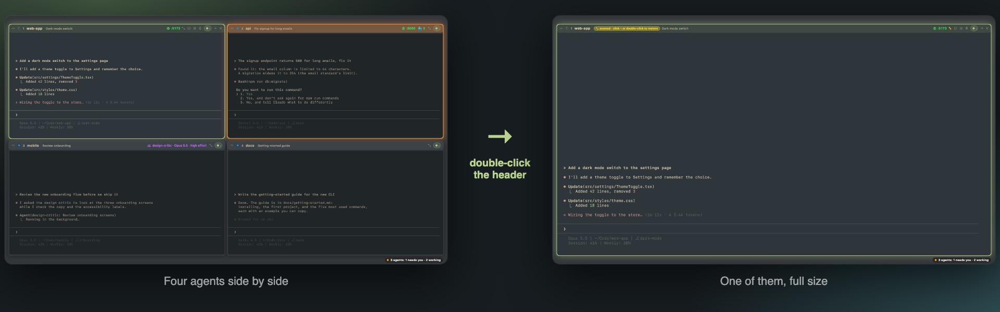
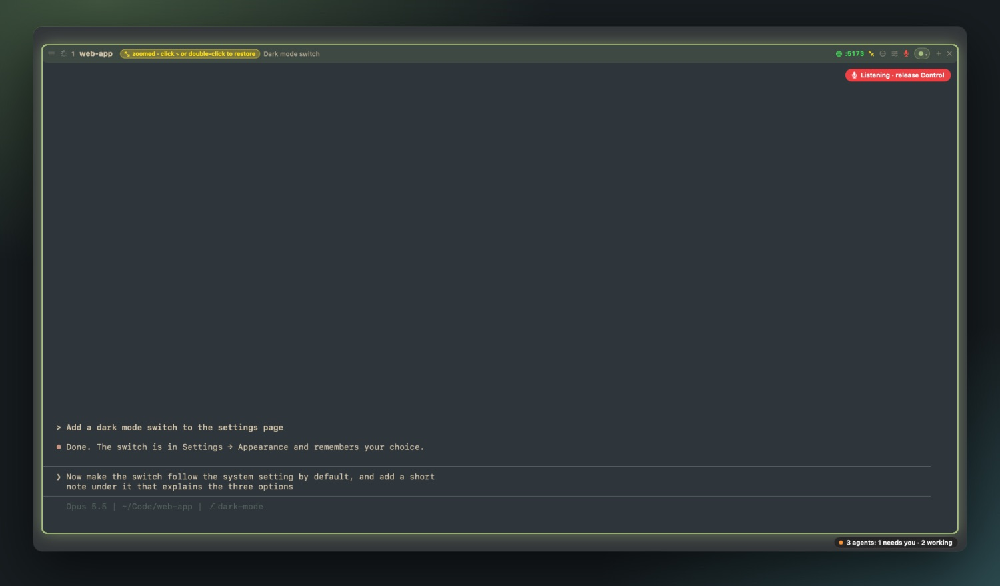
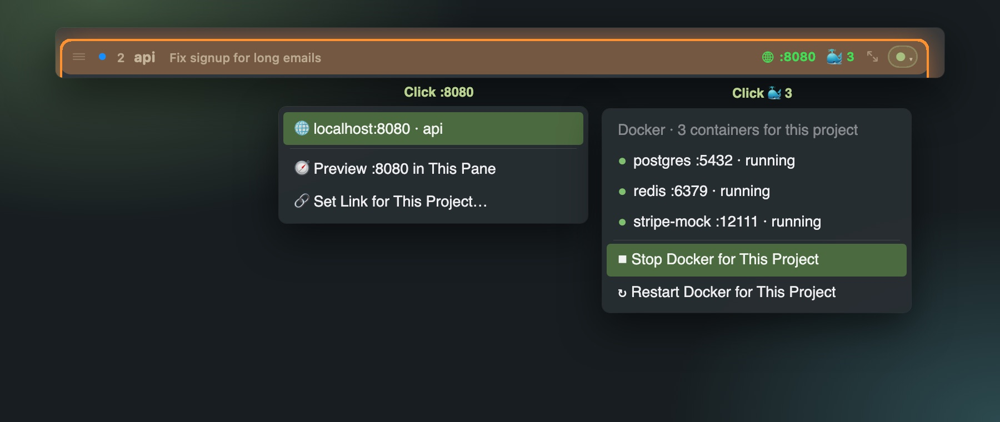
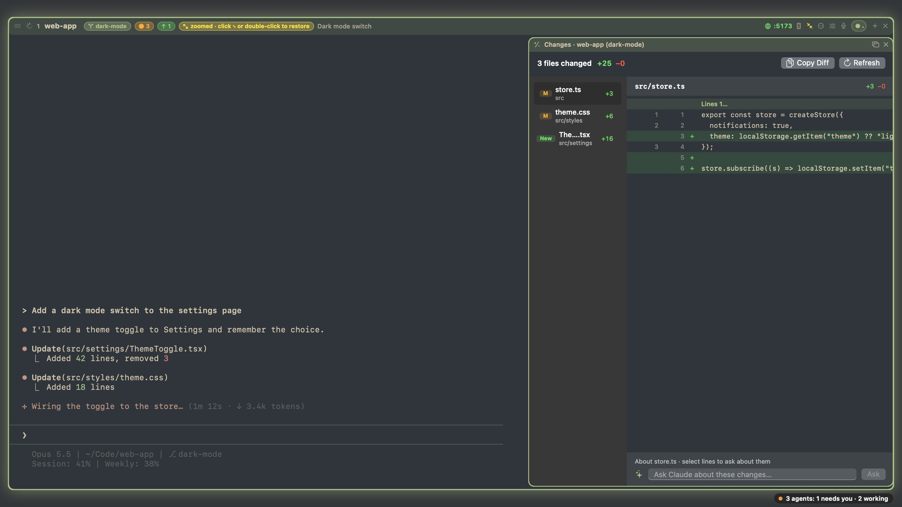
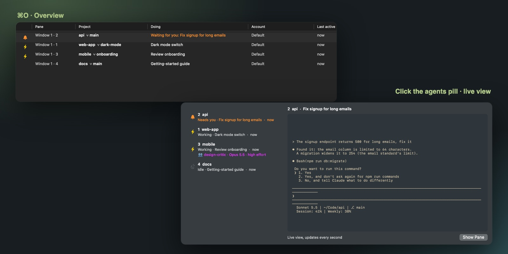
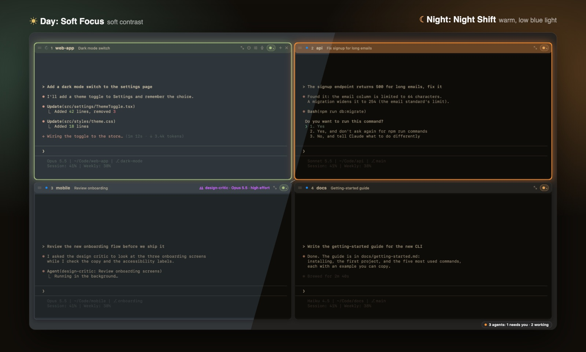

All your AI agents, side by side.
Mulembe is a calm, native Mac terminal for Claude Code and Codex. See who's working, who needs you and what changed, all in one window.

Many agents. One calm window.
Mulembe means peace in Luhya, a language of western Kenya. That's the idea: calm, even with five agents working at once.
Every agent. One window.
Panes and layouts for 1 to 16 sessions. Save a set of projects and reopen it exactly as it was.
Someone needs you. You'll know.
Every pane shows working, done or waiting. A soft chime when an agent asks, and a pill that counts the rest.
The agents behind the agent.
See the subagents Claude starts, with the model and effort each one runs on.
A limit pauses. You choose.
Continue the moment your usage resets, or move the conversation to another account you own.
Many accounts. One app.
Claude and ChatGPT accounts side by side, one per pane, each with its usage at a glance.
Every change. One click.
A changes panel for each project. Open a file, discard it or add it to .gitignore.
Quit anytime. Nothing stops.
Agents keep running while Mulembe restarts, updates or even crashes. After a Mac restart, every conversation comes back.
Your phone, in the loop.
Turn Remote Control on or off per pane, and reply from the Claude app.
Private by default.
No analytics, no tracking. Voice stays on your Mac. Only license and update checks go online.
Someone needs you. You'll know.
Never miss an agent that finished or got stuck on a question.
Orange means you.
The pane that needs an answer turns orange, and the agents pill counts how many are waiting.
A soft chime.
A gentle sound when you're in Mulembe. Pick one of ten, or none.
In another app? A notification.
Click it to jump straight to the pane. The Dock icon shows how many agents wait for you.

One pane. The whole window.
Double-click any pane's header and it fills the window. The other agents keep working behind it. Double-click again, and they're all back.

Double-click to focus.
Double-click the header, press ⇧⌘↩, or double-click with two fingers on the trackpad.
The rest keep working.
The other agents run on behind it, and the pill tells you when one of them needs you.
Back in one move.
Double-click again and the whole grid returns, exactly as it was.
Hold Control. Just talk.
Your words land in Claude's prompt while you speak. Let go, and it's typed.
Live, as you speak.
Words appear as you say them and fix themselves as you go. Any other key cancels.
Stays on your Mac.
Recognized on your Mac, in the language you pick. Nothing is sent anywhere.
Or tap the mic.
Click the microphone in a pane's header to talk without holding a key.


Your app, one click away.
Every pane shows the ports its project serves and the Docker containers behind it.
Ports, found for you.
Click :3000 to open your app, or preview it right inside the pane. No setup.
The real address.
Projects that run on an address like app.yourproject.localhost open right there.
Docker, in reach.
See the project's containers, then stop, start or restart them. Start brings back only what you stopped.
Git, without leaving the pane.
Your branch, what changed, what to push and what to pull, right in every header.

Your branch, at a glance.
Every header shows the branch, files changed ●, commits to push ↑ and new commits to pull ↓.
One click to pull.
Click ↓ to pull. If both sides changed, Claude does the merge and tells you what happened.
Review before you commit.
The changes panel shows every diff. Select lines and ask Claude about them, or open, discard or ignore a file.
A branch per agent.
Open a pane on its own branch, in a copy of the project, and merge it back when the work is done.
Every agent at a glance.
However many windows and panes you have open.
⌘O for the overview.
Every pane in every window: its project and branch, what Claude is doing, the account and when it last moved.
Waiting ones first.
Agents that need you rise to the top. Return takes you straight there.
A live look, without switching.
Click the agents pill for a live view of any agent's screen, then jump in with one click.

Switch accounts. Keep the conversation.
Every Claude and ChatGPT account you pay for, side by side.
One account per pane.
Work, personal, a client's. Each pane runs on the account you pick, and new panes start on your default.
Signed in their way.
Each account logs in through Claude Code's or Codex's own sign-in, in a folder of its own. Mulembe never reads your tokens.
Move mid-conversation.
Switch a pane to another account and Claude picks up the same conversation, with everything it knew so far.
Usage in plain sight.
Session and weekly usage for every Claude account, right in Settings.
Your agents, in your pocket.
Claude's Remote Control, one switch per pane.
One tap per pane.
Turn Remote Control on or off for any pane from its header, or for all of them at once from the menu bar.
Follow along anywhere.
Open the Claude app on your phone to read along and send messages while the work runs on your Mac.
Parked means private.
Park a pane you're done with for now, and it leaves your phone until you bring it back.
Nothing stops your agents.
Every pane runs in its own background session, apart from the app itself.
Quit, update, even crash.
Mulembe can close, update itself or crash, and every agent keeps working.
Right where you left them.
Open Mulembe again and each pane reconnects to its running session, history and all.
After a restart, too.
If your Mac restarts, Mulembe brings every pane back and resumes each Claude conversation.
Sessions you can save.
Save a set of panes as a profile and reopen it any day, exactly as it was.
Easy on your eyes after dark.
Six themes, made for long sessions.
Warm at night.
Night Shift is a warm theme with low blue light for late sessions.
Switches by itself.
Pick a day and a night theme. Mulembe changes at sunset and sunrise, worked out from your time zone, with no location access.

Simple pricing
Try everything free for 14 days. If Mulembe earns its place, buy it once.
- Every feature, no subscription
- Use it on up to 3 of your Macs
- Free updates, installed with one click
- 14-day free trial first
- 14-day money-back guarantee
Questions
Which agents does it work with?
Mulembe is made for Claude Code and also runs OpenAI's Codex. Any other command-line tool works too: every pane is a full terminal.
Which Macs does it run on?
Any Mac with macOS 13 Ventura or later.
Do I need anything else?
Claude Code (or Codex) itself. To keep agents running while Mulembe restarts, it uses tmux, which you can install with Homebrew (brew install tmux). Without it, Mulembe resumes your conversations instead.
Does it collect any data?
No. Mulembe has no analytics or tracking. It goes online only to check your license key and to look for updates. Voice input is recognized on your Mac. See the privacy policy.
What happens when the trial ends?
Mulembe asks for a license key before you can keep working in it. Your sessions keep running in the background, so everything is right where you left it once you activate.
How do I move my license to a new Mac?
Open Mulembe → License… on the old Mac and click Deactivate This Mac. You can also manage your Macs in the Polar customer portal linked in your receipt.
Can I get a refund?
Yes. Email us within 14 days of your purchase for a full refund. See the refund policy.
Why does macOS ask me to confirm when I first open it?
Mulembe isn't notarized by Apple yet, so macOS asks you to confirm once. The install steps show how. It takes a few seconds.
What does the name mean?
Mulembe is a greeting meaning peace in Luhya, spoken in western Kenya.